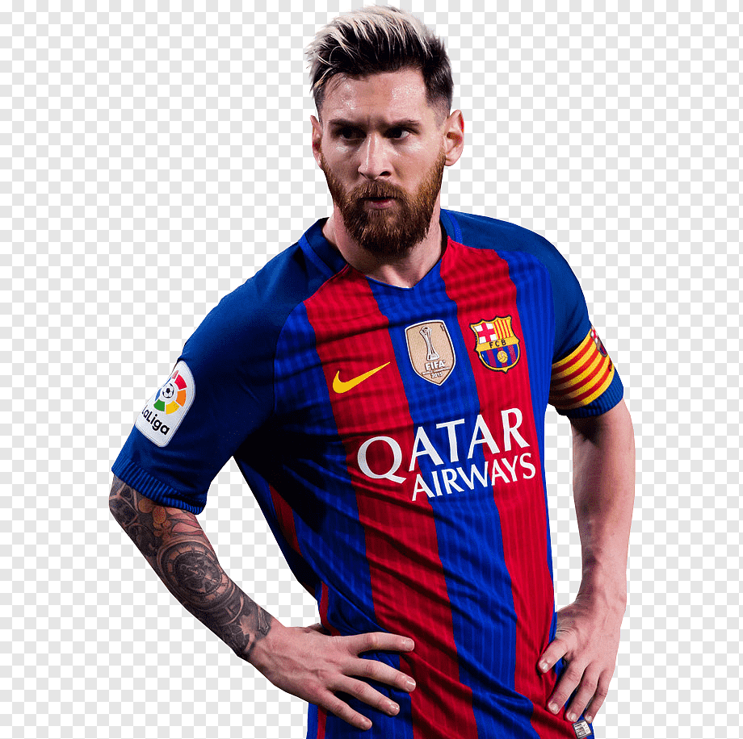

MESSI

Lionel Andrés Messi Cuccittini (Rosário, 24 de junho de 1987) é um futebolista argentino que atua como atacante. Atualmente joga pelo Inter Miami e pela Seleção Argentina, onde, atuando como capitão, venceu a Copa do Mundo do Catar de 2022. Ele possui um recorde de sete premiações da Bolas de Ouro pela France Football e sete pela FIFA,[9] um recorde de seis Chuteiras de Ouro e, em 2020, foi escalado no Dream Team da Bola de Ouro.